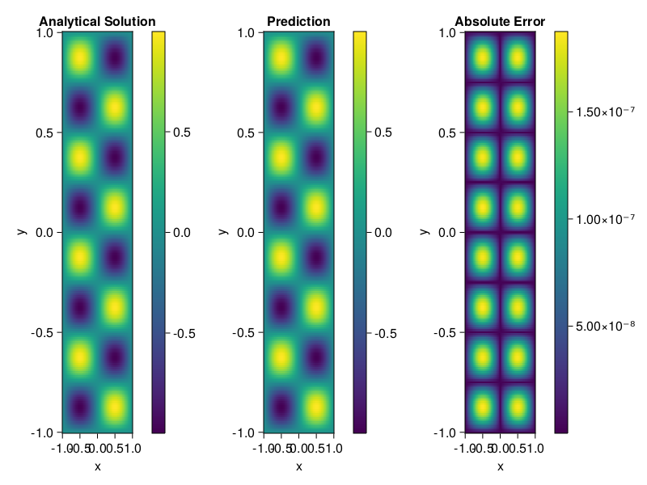

Helmholtz equation
Let us consider the Helmholtz equation in two space dimensions
\[\begin{aligned} &\Delta u(x, y)+k^{2} u(x, y)=q(x, y), \quad(x, y) \in \Omega:=(-1,1)^2 \\ &u(x, y)=0, \quad(x, y) \in \partial \Omega \end{aligned}\]
where
\[q(x, y)=-\left(a_{1} \pi\right)^{2} \sin \left(a_{1} \pi x\right) \sin \left(a_{2} \pi y\right)-\left(a_{2} \pi\right)^{2} \sin \left(a_{1} \pi x\right) \sin \left(a_{2} \pi y\right)+k^{2} \sin \left(a_{1} \pi x\right) \sin \left(a_{2} \pi y\right).\]
The excat solution is $u(x,y)=\sin{a_1\pi x}\sin{a_2\pi y}$. We chose $k=1, a_1 = 1$ and $a_2 = 4$.
using ModelingToolkit, IntervalSets, Sophon, Lux
using Optimization, OptimizationOptimJL
@parameters x,y
@variables u(..)
Dxx = Differential(x)^2
Dyy = Differential(y)^2
a1 = 1
a2 = 4
k = 1
q(x,y) = -(a1*π)^2 * sin(a1*π*x) * sin(a2*π*y) - (a2*π)^2 * sin(a1*π*x) * sin(a2*π*y) + k^2 * sin(a1*π*x) * sin(a2*π*y)
eq = Dxx(u(x,y)) + Dyy(u(x,y)) + k^2 * u(x,y) ~ q(x,y)
domains = [x ∈ Interval(-1,1), y ∈ Interval(-1,1)]
bcs = [u(-1,y) ~ 0, u(1,y) ~ 0, u(x, -1) ~ 0, u(x, 1) ~ 0]
@named helmholtz = PDESystem(eq, bcs, domains, [x,y], [u(x,y)])\[ \begin{align} \frac{\mathrm{d}}{\mathrm{d}y} \frac{\mathrm{d}}{\mathrm{d}y} u\left( x, y \right) + \frac{\mathrm{d}}{\mathrm{d}x} \frac{\mathrm{d}}{\mathrm{d}x} u\left( x, y \right) + u\left( x, y \right) =& - 166.78 \sin\left( 3.1416 x \right) \sin\left( 12.566 y \right) \end{align} \]
Note that the boundary conditions are compatible with periocity, which allows us to apply BACON.
chain = BACON(2, 1, 5, 2; hidden_dims = 32, num_layers=5)
pinn = PINN(chain) # call `gpu` on it if you want to use gpu
sampler = QuasiRandomSampler(300, 100)
strategy = NonAdaptiveTraining()
prob = Sophon.discretize(helmholtz, pinn, sampler, strategy)
@time res = Optimization.solve(prob, BFGS(); maxiters=1000)u: ComponentVector{Float64}(filters = (filter_1 = (bias = [0.5152687956952666; -0.1909106151629202; … ; -0.5837480716406088; 0.7858012187813865;;]), filter_2 = (bias = [-0.20019938024533063; -0.34615975289379225; … ; -0.5332980785523189; 0.4457969772297699;;]), filter_3 = (bias = [-0.1814909550591838; 0.9057100535146432; … ; -0.44068018058445013; -0.9386207250517108;;]), filter_4 = (bias = [-0.21374709020739663; -0.09002110303757874; … ; 0.04276976189740747; 0.975655613723479;;]), filter_5 = (bias = [-0.05877187377685826; -0.8613163363931402; … ; 0.03307800659746338; -0.7882321133391554;;])), linear_layers = (layer_1 = (weight = [-0.20370776967698073 0.32449319680547367 … 0.3122440988858351 0.37665129202103226; 0.08305751668836192 0.3108688557084171 … -0.1896793294120972 0.19050191970630737; … ; 0.05419322564860284 0.06243816155948744 … 0.0710259434647044 0.02954430729174496; 0.15680289019068536 -0.44146804813121066 … 0.14625285474502986 -0.2730830717068409], bias = [-0.004584466225879379; -0.027823068047491274; … ; 0.06492968232367466; 0.008378580177106694;;]), layer_2 = (weight = [-0.405884342292725 -0.042213506843831114 … 0.33396351723489576 0.15776338160762965; -0.0430831222503239 0.3326862991868414 … -0.1264004598861163 -0.0045696514128444185; … ; 0.22980198185249295 -0.25283916335339696 … -0.13762400486847126 -0.16909723313959973; 0.1019307368462418 -0.08774900611962512 … -0.0734470311025253 -0.21283965295314466], bias = [-0.0439255161250331; 0.027126151339880337; … ; -0.019978272861580416; 0.04293529291933335;;]), layer_3 = (weight = [0.43970327612247173 0.11794998525433492 … 0.4403645084754382 0.31623646438118935; -0.2983566742768668 0.09502105757364585 … 0.007174811646199387 0.2436627412819924; … ; -0.03581796069904481 -0.35653500937241356 … -0.15404055117552667 -0.4197303788227142; 0.37516663513708004 -0.0812248843998975 … 0.4010801937181961 -0.2112338020199899], bias = [0.02458822026946458; 0.011604158053562477; … ; -0.014535961650049183; -0.0028272491811706267;;]), layer_4 = (weight = [0.20423967338255314 -0.2751530977420102 … -0.2105811511460537 0.3600502675270887; -0.3305199911338961 -0.19965735841568194 … -0.41229672133029155 -0.014387325138296155; … ; 0.37089907867073335 -0.28522136735393994 … 0.07747659802126039 0.1277432559305833; -0.4185249459489678 0.3205314294958256 … 0.0020135111581338593 0.13718672053041953], bias = [0.004274096702675987; 0.003749700532666971; … ; -0.0013381760016807662; -0.010665412453890298;;])), output_layer = (weight = [0.22794683280424383 -0.13104600461006108 … 0.4031287485761642 -0.5674086090582764], bias = [-0.03996049156758543;;]))Let's plot the result.
phi = pinn.phi
xs, ys= [infimum(d.domain):0.01:supremum(d.domain) for d in domains]
u_analytic(x,y) = sinpi(a1*x)*sinpi(a2*y)
u_real = [u_analytic(x,y) for x in xs, y in ys]
phi_cpu = cpu(phi) # in case you are using GPU
ps_cpu = cpu(res.u)
u_pred = [sum(phi_cpu(([x,y]), ps_cpu)) for x in xs, y in ys]
using CairoMakie
axis = (xlabel="x", ylabel="y", title="Analytical Solution")
fig, ax1, hm1 = heatmap(xs, ys, u_real, axis=axis)
Colorbar(fig[:, end+1], hm1)
ax2, hm2= heatmap(fig[1, end+1], xs, ys, u_pred, axis= merge(axis, (;title = "Prediction")))
Colorbar(fig[:, end+1], hm2)
ax3, hm3 = heatmap(fig[1, end+1], xs, ys, abs.(u_pred-u_real), axis= merge(axis, (;title = "Absolute Error")))
Colorbar(fig[:, end+1], hm3)
fig